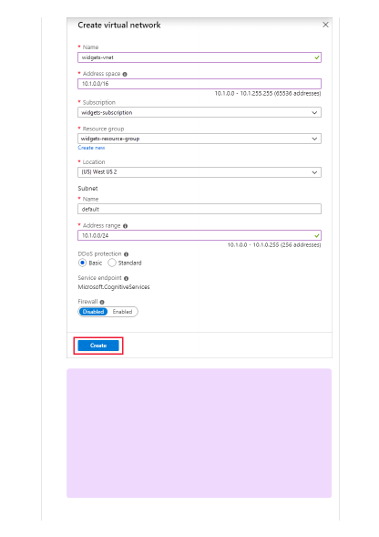
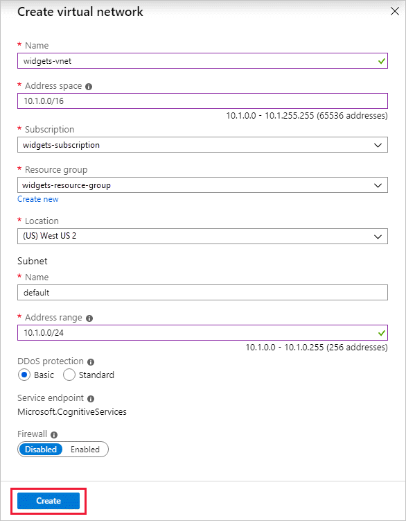

７
Note
If a service endpoint for Azure Cognitive Services wasn't previously
configured for the selected virtual network and subnets, you can
configure it as part of this operation.
Presently, only virtual networks belonging to the same Azure Active
Directory tenant are shown for selection during rule creation. To grant
access to a subnet in a virtual network belonging to another tenant,
please use PowerShell, CLI or REST APIs.